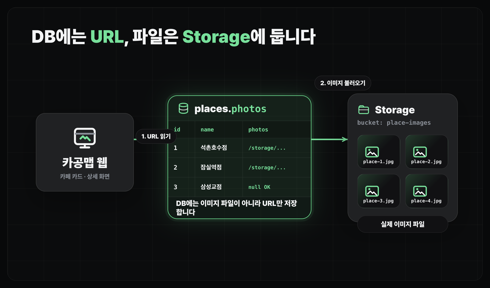
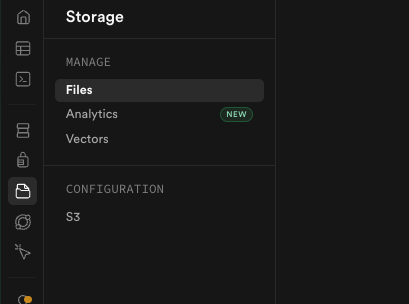
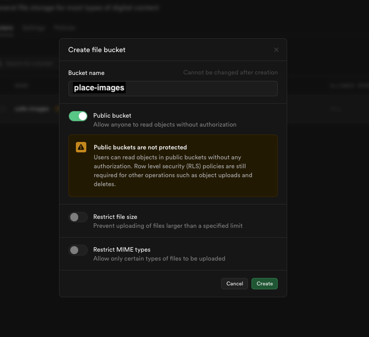

느좋카페 가게 이미지 적용하기
파일 스토리지 적용하기
카페 이미지를 서비스에서 보여주기 위해 스토리지 설정, 데이터베이스 컬럼 및 서비스 로직을 추가합니다.
얻어갈 것
- 카페 이미지 파일 저장을 위해 File Storage(파일 스토리지)를 추가합니다.
places테이블에 저장된 이미지 URL들을 추가한 후, 서비스에 반영합니다.
파일 스토리지란
- 파일 스토리지는 데이터를 파일로 저장하여 관리합니다.
- 이미지, 음악, 영상 같은 큰 파일은 데이터베이스에 직접 넣기보다 별도 파일 스토리지 둡니다.

Supabase Storage
- Supabase Storage는 이미지 파일을 올려두고 URL로 꺼내 쓰는 저장소입니다.
- 이번 단계에서는 카페 사진을 Storage에 올리고,
places테이블에 이미지 URL을 연결합니다. - 여러 장을 보여줄 수 있게
photos처럼 배열 형태의 컬럼을 후보로 둡니다.
places에 이미지 URL 추가하기
P1이미지 URL 컬럼 추가하기
카페 이미지 정보를 넣기 위해 places 테이블에 photos 컬럼을 하나 추가해줘. - 여러 장을 넣을 수 있어야 해. - 이미지 파일 자체가 아니라 URL을 저장할 거야. - 기존 places 데이터는 삭제하지 마.
이미지 업로드하기
- MCP에서 파일 업로드를 지원하지 않아, Supabase 대시보드에서 직접 올립니다.
- 왼쪽 상단의
이미지 파일 다운로드버튼으로images.zip을 내려받아 압축을 풀고,place-imagesbucket(버킷)에 드래그해서 업로드합니다. - 업로드가 끝나면 이미지 URL을 확인하고, 어떤 장소 row(행)와 연결할지 정합니다.


이미지 주소 테이블에 연결하기
P2이미지 URL 연결하기
현재 Supabase Storage에 있는 이미지들을 places.photos에 연결해줘. - 파일 이름을 보고 장소를 추정해줘. - 애매한 매칭은 먼저 물어봐줘. - 기존 places 데이터는 삭제하지 마.
- 실제 서비스에서는 보통 이렇게 한꺼번에 수동 매칭하지 않습니다.
- 장소를 등록하거나 수정하는 화면에서 이미지를 같이 올리고, 그 결과 URL을 해당 장소 데이터에 연결하는 흐름이 더 자연스럽습니다.
화면에 보여주기 전에 논의하기
P3이미지 표시 방식 논의하기
업로드된 이미지들을 서비스 화면에 보여줘. - 마커에 대표 사진을 작게 보여줘. - 마커를 클릭하면 상세 화면에서 해당 장소의 사진들을 보여줘. - 데스크톱에서는 상세 화면을 우측 패널로 열고, 모바일에서는 화면 폭에 맞게 자연스럽게 보여줘. - 이미지가 없는 장소는 빈 상태로 처리해줘. - 이미지가 여러 개면 좌우 슬라이드로 볼 수 있게 해줘. - 우측 하단에 이미지 번호 / 전체 갯수도 보여줘. 구현하기 전에 애매한 점이 있으면 먼저 물어봐.
마무리
- 파일 스토리지는 큰 파일을 따로 보관하고, DB에는 그 파일을 가리키는 URL을 저장하는 방식으로 보통 구현합니다